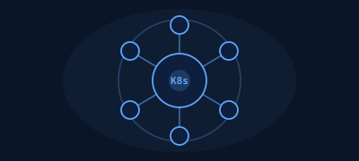

Production-Grade Microservices Infrastructure
- Architected a multi-AZ Kubernetes infrastructure using Terraform and a GitOps-driven CI/CD pipeline with ArgoCD and GitHub Actions for automated builds, deployments, and rollbacks; validated 100% resiliency under node failure and traffic spikes using Chaos Mesh
- Built full-stack observability using Prometheus, Grafana, and the ELK Stack, implementing SLOs, SLIs, and error budget tracking; designed a cross-region backup and disaster recovery strategy, achieving zero data loss across all services
100%Resiliency
ZeroData Loss
Multi-AZHA Design
February 2026

High-Availability WordPress Site with Infrastructure as Code
- Reduced infrastructure provisioning time from 2 hours to 15 minutes by authoring CloudFormation templates that automated deployment of Auto Scaling Groups, RDS Multi-AZ, and CloudFront CDN across networking, compute, database, and storage layers
- Ensured continuous uptime visibility and data protection by building CloudWatch dashboards and alarms to monitor error rates and response times, and implementing AWS Backup with S3 lifecycle policies for automated retention
15 minProvisioning
Multi-AZRDS
AutomatedBackup
July 2025

Serverless Three-Tier Architecture with AWS Well-Architected Review
- Designed and deployed a fully serverless three-tier application using API Gateway, Lambda, and DynamoDB, applying all six pillars of the AWS Well-Architected Framework, eliminating idle compute costs and enabling automatic scaling from zero to millions of requests
- Enforced defense-in-depth security with Amazon Cognito, AWS WAF, KMS encryption, and SQS dead-letter queues with EventBridge — passed full Trusted Advisor review with zero flagged findings
ZeroFlagged Findings
6 PillarsWell-Architected
0→∞Auto Scaling
November 2025
Highly Available WordPress Website on AWS
- Built and deployed a highly available WordPress application using EC2 across two Availability Zones, an Application Load Balancer, Auto Scaling Groups, and RDS Multi-AZ for automatic database failover
- Stored static assets in S3 and integrated CloudFront CDN for faster global delivery; implemented CloudWatch dashboards and alarms for uptime monitoring and automated backups using AWS Backup
- Configured VPC networking with public and private subnets, security groups, and IAM roles following least-privilege principles
Multi-AZHA Design
ALBLoad Balanced
AutomatedBackup
July 2025
Serverless Event-Driven Web Application
- Designed and deployed a fully serverless application using API Gateway, Lambda, DynamoDB, and SQS for asynchronous processing; automated workflows with EventBridge triggers
- Secured APIs using Amazon Cognito authentication and IAM policies; implemented dead-letter queues for failed message handling and monitored Lambda metrics with CloudWatch
ZeroIdle Compute
DLQZero Msg Loss
CognitoAuth Secured
September 2025

Containerized Microservices Platform on AWS
- Built and deployed containerized microservices applications using Docker and Amazon ECS Fargate; stored container images in Amazon ECR and distributed traffic using an Application Load Balancer
- Automated deployments end-to-end using AWS CodePipeline and CodeBuild CI/CD pipelines; monitored application health and logs using CloudWatch and configured secure IAM access for all services
ECSFargate
CI/CDAutomated
ECRImage Registry
October 2025